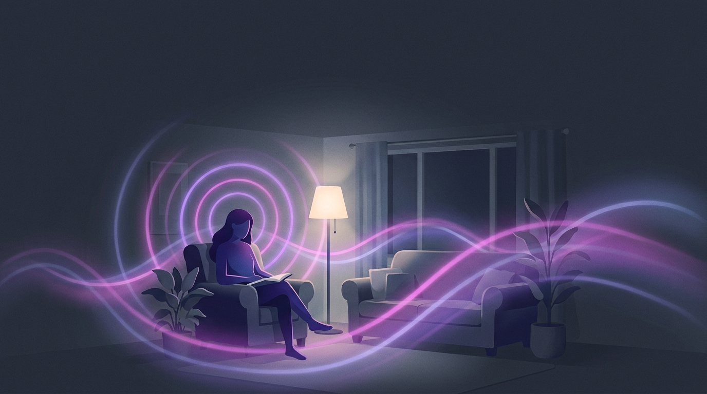
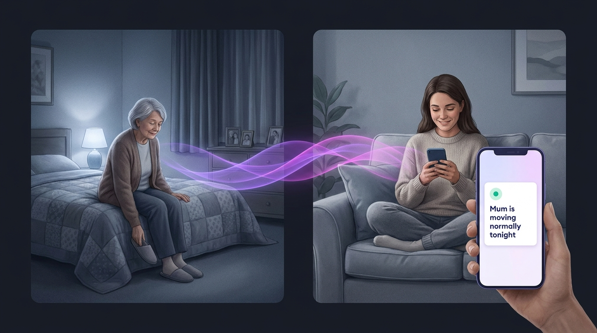
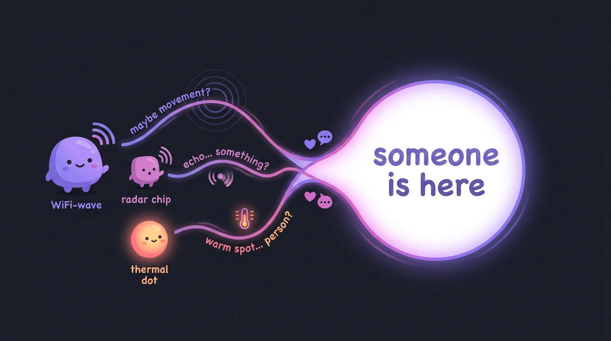
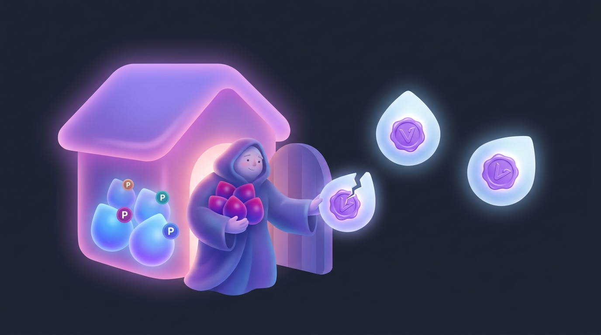
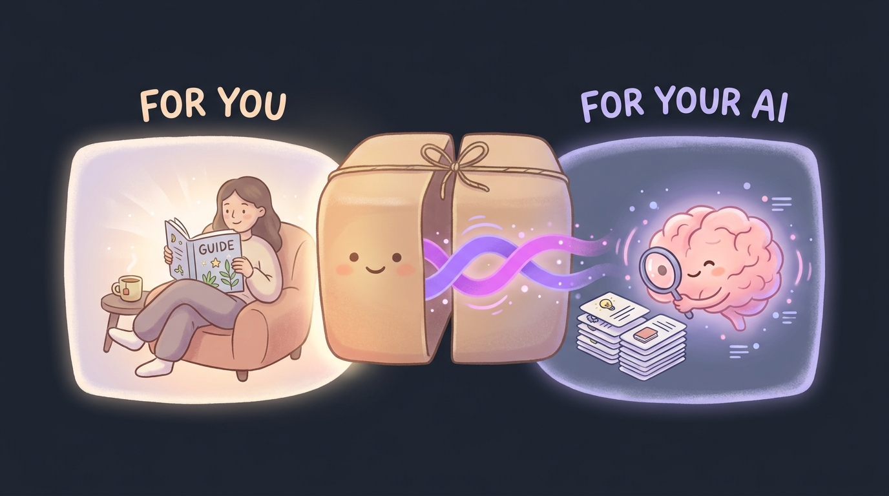

ruvnet · rufield · multimodal field sensing
The answer a camera
would give you —
without being watched.
RuField is a free, open standard — plus a working Rust build — for camera-free room sensing. It takes the invisible signals already bouncing around a room (your WiFi, a tiny radar chip, a cheap heat sensor) and turns them into one plain-English stream of facts: someone is present · they sat down · they got out of bed · they left the room. No camera. No microphone. A privacy label and a tamper-proof signature on every single reading.

01
What it is — and who it’s for
Start here — the plain-English version, anchored to one real person.
Two words in the name do all the work. Let’s demystify both, then meet someone it actually helps.
“Field” = the invisible signals all around you right now. Your WiFi is constantly bouncing radio waves off everything in the room. A $10 radar chip sees motion through the air. A cheap thermal sensor sees body heat. When a person moves — even slightly — all of these change. That changing pattern is the “field.”
“MFS” (Multimodal Field Sensing Specification) = an agreed-upon format so every one of those different sensors speaks the same language. Today WiFi, radar, and thermal each spit out their own incompatible gibberish. RuField is the translator that turns all of them into one tidy event anyone can read and combine.
Think of it as “USB for room-sensing.” Before USB, every device had its own weird plug; USB was just an agreement on the shape of the plug, and suddenly anything worked with anything. RuField is one agreed-upon shape so any sensor’s reading drops into any app. It is not a new gadget and not a new radio — it sits above the standards you may have heard of (WiFi sensing / 802.11bf, radar, UWB) and makes their outputs fit together.
Meet Margaret — the “oh, that’s what it’s for” moment
Margaret is 78 and lives alone. Her daughter Priya worries about night-time falls and bathroom trips — but Margaret flatly refuses cameras in her home, and she’s right to.
Technical view — the before → after, as the real data flow
room_state.toml; rufield-privacy.)
Friendly view — the same story, in a picture

Before RuField, Priya’s only real options were a camera (vetoed) or a panic button Margaret has to remember to wear and press — useless if she’s fallen and can’t reach it. So Priya just worried.
After RuField, a few cheap, camera-free sensors sit in the corners. RuField fuses their invisible signals into plain facts. The raw signals never leave Margaret’s house (they’re privacy class P0, which the system refuses to transmit by default). A sensitive health reading like breathing is P4 and stays off unless Margaret explicitly consents. Every fact carries a signed receipt, so a tampered “she’s fine” can’t be faked.
The line that makes it land: it’s how you get the answer a camera would give you — “is everything okay in there?” — without anyone ever being watched.
CsiReplayAdapter) is recorded
WiFi replayed from a file — a physically-grounded proxy,
not validated accuracy. The architecture, privacy
enforcement, and provenance are real and working today; the
field-accuracy numbers that would let you trust this with a real
Margaret need the hardware adapters v0.1 deliberately does not yet ship.
(Source: README L13–25; ADR-260 “Honest statement.”)
02
The problem it solves — and why now
Why does this need to exist, and why does it matter today?
The useful information — “Grandma got out of bed at 3am and hasn’t come back” — usually requires a camera, and a camera in a bedroom or bathroom is a non-starter. RuField gives you the answer without the image: nobody is ever watched; the system only knows “a person is here,” never “here is a picture of them.”
There’s a second, quieter problem. Every kind of sensor talks a different language, and every team that wants to combine them reinvents the same plumbing — calibration, fusion, privacy rules, anti-spoofing — by hand, badly. WiFi sensing, radar, and thermal are each “locked into modality-specific silos” with no common format, which prevents reliable fusion and makes governance weak. (Source: ADR-260 §4.)
Why now? Because WiFi sensing is about to be everywhere — in homes, hospitals, offices. If that’s coming, it needs a common, privacy-first, provable format the way the early web needed HTTP. RuField is a bid to be that shared layer, with privacy and provenance built in from day one rather than bolted on after the scandal. (Source: ADR-260 §21 decision matrix; §25.)
Technical view — three silos vs one common event format
FieldEvent (a typed feature + a
privacy class + a signed receipt) that every modality maps into, which
is what finally makes fusion, privacy, and provenance consistent across
all of them.
Friendly view — it’s “USB for room-sensing”
03
How it works
From an invisible wobble in the air to a signed, plain-English fact.
The heart of RuField is one idea you already use every day:
“fusion” just means common sense from many clues.
No single sensor is sure. WiFi thinks someone’s there;
radar agrees; the thermal sensor sees warmth in the same spot. Combine
the three weak guesses and you get one confident answer — exactly
how you use sight, sound, and touch together. (Source:
room_state.toml; ADR-260 §12–13.)
Here’s the whole journey, stage by stage, from a real signal to a fact you can trust.
Technical view — the real reference pipeline (the 7 crates)
rufield-adapters + -core emit
a signed event → rufield-provenance admits only verified
ones → rufield-fusion applies the
room_state.toml rules (weighted Bayes + temporal windows)
→ rufield-privacy caps and gates the result before it
leaves. (rufield-bench scores it; rufield-viewer
renders it.)
Friendly view — three weak guesses, one confident answer

04
What a solved state looks like
When it’s working, what do you actually see — and what changed?
A “solved” RuField looks like a calm dashboard you can read at
a glance. The reference build ships a live viewer you can
run today (cargo run -p rufield-viewer) that replays a room
waking up — enter → sit → breathe → sleep →
scratch → bed-exit → leave — tick by tick, in your
browser, with no build step.
Two things sit on top of every event, and they’re the whole point:
a colour-coded privacy badge (P0
… P5) and a click-to-inspect
signed receipt (✓/✗). An honest
SYNTHETIC banner tells you the demo’s sensors are
simulated, so you’re never misled.
| The moment | Before RuField | After RuField |
|---|---|---|
| Knowing if someone’s up at 3am | A camera (vetoed) or a worried phone call | “Got out of bed” appears as a plain, signed fact |
| What’s actually captured | A literal image of a person in a bedroom | No image, ever — only “a person is here” |
| Where the raw data goes | Often streamed to a cloud you don’t control | Raw signal is P0 — refused off-device by default |
| Health-style readings (breathing) | On or off with no clear consent boundary | P4 — off unless explicitly consented |
| Trusting an “all-clear” | No way to tell a real reading from a faked one | Every fact carries a tamper-proof signature you can verify |
Technical view — the live viewer’s four panels
Friendly view — the kindly gatekeeper and the seal

05
Why this, vs. what you already have?
“I’ve got a camera / a motion sensor / a smart-home hub — why do I need this too?”
You may already use a camera, a motion sensor, or a smart-home hub like Matter. Here’s the honest difference — and why RuField isn’t “just another thing piled on.”
| You might already use… | What it gives you | What RuField adds |
|---|---|---|
| A security camera | A literal image — and a privacy problem nobody wants in a bedroom | The answer (“present, got out of bed”) with no image at all, plus a privacy label per fact |
| A PIR motion sensor | One bit: “something moved” | Rich room-state — sitting, sleeping, breathing, bed-exit, room-transition — fused with confidence scores |
| Matter / a smart-home hub | A way for devices to connect | Matter is a connectivity layer; it doesn’t define a sensing-event format. RuField is the missing sensing layer that could feed a Matter bridge |
| WiFi sensing / 802.11bf alone | WiFi-only readings, no privacy or provenance model | One grammar across WiFi + radar + ultrasound + IR, with privacy classes and signed receipts — RuField sits above 802.11bf, it doesn’t compete with it |
The one-line version: everything you already have either watches you (cameras), tells you almost nothing (a motion blip), or just connects devices (Matter). RuField is the privacy-first layer that turns invisible signals into rich, provable facts — and it’s an open standard, so it’s not one vendor’s locked box.
Technical view — where RuField sits in the stack
Friendly view — three things you have, and the gap RuField fills
06
Use-case gallery
Six real situations — situation → the exact command → what it does → what you get. Each opens to its own diagram.
Every command below is taken straight from the project’s own README — nothing here is invented. Each scenario maps to something the v0.1 reference stack actually runs. Click one open to see how it flows.
Scenario 1
“Just show me it works” — the benchmark
- The situation
- You’ve heard the pitch and want proof the pipeline is real, not a slide deck.
- The exact command
cargo run -p rufield-bench -- 2026- What it does
- Runs the whole pipeline — synthetic sensors → fusion → room state → scoring — deterministically against known ground truth.
- What you get
- A one-screen report card: F1 per task, p95 latency, 100% provenance coverage, 0 privacy violations — every number labelled SYNTHETIC, honestly. (Source: README L76–82, L279–313.)
Scenario 2
“Let me watch a room light up” — the live dashboard
- The situation
- You want to see camera-free room intelligence, not read a table.
- The exact command
cargo run -p rufield-viewer # then open http://localhost:8088/- What it does
- Replays the enter → sit → breathe → sleep → scratch → bed-exit → leave sequence tick by tick across WiFi/radar/thermal, in your browser, no build step.
- What you get
- A live room-state panel, a privacy-badged event stream, the fusion graph, and a click-to-inspect signed receipt per event — under an honest
SYNTHETICbanner. (Source: README L84–152.)
Scenario 3
“Plug in a real WiFi recording” — the one real-signal path
- The situation
- You want to feed RuField real captured WiFi, not a simulator.
- The exact command (Rust)
let mut adapter = CsiReplayAdapter::from_jsonl(&recording)?; adapter.calibrate("living_room")?; while let Some(event) = adapter.next_event()? { fusion.ingest(event); // RuFieldFusion }- What it does
- Reads a real
.csi.jsonlrecording, learns an empty-room baseline, and emits one signed field event per frame (real sha256 + ed25519) into the same fusion engine. (Source: README L212–244.) - What you get
- Real
person_present/breathinginferences from real WiFi. Honest caveat: it’s replay from an unlabeled file, so it’s a CSI-variance proxy, not validated accuracy — the win is “RuField ingests real WiFi and fuses it.” (Source: README L246–254.)
Scenario 4
“Prove a reading wasn’t faked” — provenance / anti-spoofing
- The situation
- A safety system can’t trust an event that might be forged — a spoofed “all clear” could hide a real emergency.
- The exact command (Rust)
rufield_provenance::is_fusable(&event)- What it does
- Checks every event’s signature; an event enters fusion only if it carries a verifying ed25519 receipt or is explicitly flagged synthetic. Tamper with any field after signing and the check fails. (Source: README L363–371; ADR-260 §11, §22.)
- What you get
- A hard guarantee that no forged or altered event can drive a trusted conclusion — the viewer flags unverified events ✗ and never fuses them. (Source: README L130–138.)
Scenario 5
“Keep the sensitive stuff on the device” — the privacy guard
privacy.rs): P0 raw is denied off-device, P4 health needs consent, P5 identity needs binding + audit.- The situation
- Raw signals and health inferences must not leak off the device by accident.
- The exact command (Rust)
DefaultPrivacyGuard::default() .authorize(class, destination, consent, identity_bound)- What it does
- Enforces the policy automatically: P0 raw frames are denied from the network by default; P4 health inferences require explicit consent; P5 (names a person) requires identity binding + an audit log. (Source: README L200–209;
rufield-privacy/src/lib.rs.) - What you get
- Privacy by construction — you literally can’t ship the sensitive data without an explicit, logged decision; the benchmark reports 0 privacy violations. (Source: README L290, L355–361.)
Scenario 6
“Show real sensor data on the same dashboard” — live upstream mode
- The situation
- You have a real RuField feed (e.g. from RuView’s sensing server) and want the same dashboard to display it instead of the simulator.
- The exact command
cargo run -p rufield-viewer -- \ --source live --upstream http://127.0.0.1:8080- What it does
- Subscribes to the upstream’s real
FieldEventstream, verifies each receipt on ingest, and runs only verified events through the identical room-state / privacy / fusion display. (Source: README L113–152.) - What you get
- The same panels, now driven by real events — with an honest green
LIVEbanner when connected, or a redDISCONNECTEDbanner if unreachable. It never silently falls back to fake data under a LIVE banner. (Source: README L140–152.)
07
How to implement — and start in five minutes
You’ve seen what it does. Here’s the shortest path to running it yourself.
RuField’s reference build is plain Rust — if you have
cargo (Rust’s build tool), you can run the whole thing.
There are exactly two starting moves: watch a room light up,
then see the score.
Technical view — clone → run the viewer → run the bench
git clone, then two cargo run
commands — one to watch a room light up, one to see the scored
report card. No Docker, no extra services. (Source: README L76–125.)
Copy-paste, in order:
# 1. get the reference build
git clone https://github.com/ruvnet/rufield
cd rufield
# 2. watch a room wake up, live in your browser
cargo run -p rufield-viewer
# then open http://localhost:8088/
# 3. see the pipeline scored against known truth
cargo run -p rufield-bench -- 2026Friendly view — it really is just two commands
08
The drop-in
One download, two halves — copy it in and your AI answers from the real source.
Everything on this page also comes as one download with two halves. One half is for you — a short written primer. The other is for your AI — a small, searchable knowledge pack your assistant can read, so it answers questions about RuField accurately, with sources, instead of guessing.
Technical view — what’s actually inside the zip (every file, in plain English)
for-you + for-your-AI), the big and small
.rvf brains, the searchable passages.jsonl, a
CLI (ask-kb.mjs) and an MCP server
(kb-mcp-server.mjs), plus a README. Wired in three steps.
Friendly view — one parcel, two gifts

for-you/ (the primer you read) and
for-your-AI/ (the knowledge pack your assistant searches).
Wiring the AI half into Claude Code takes three small steps:
-
Unzip it next to your project.
unzip rufield-dropin.zip cd rufield-kb/for-your-AI npm install -
Point Claude Code at it with a
.mcp.jsonfile. This tiny file tells Claude Code about the local knowledge tool. Drop it in your project root:
({ "mcpServers": { "rufield-kb": { "command": "node", "args": ["rufield-kb/for-your-AI/kb-mcp-server.mjs"] } } }.mcp.jsonis just a list of helper tools Claude Code is allowed to call. Here it registers the knowledge pack as a tool namedrufield-kb.) -
Add a verification gate to your
CLAUDE.md.CLAUDE.mdis the instruction file Claude reads first. This forces it to check the knowledge pack before answering, rather than guessing:## RuField questions Before answering ANY question about RuField, query the `rufield-kb` tool and ground your answer in what it returns. If the pack has no answer, say so plainly — do not invent one.
Then confirm it works. Ask Claude Code something only the pack can answer:
What are the privacy classes P0 through P5 in RuField, and which
ones are denied, consent-gated, or identity-bound?
If the wiring is right, the answer comes back grounded in the pack —
P0 raw (denied off-device),
P4 health (consent), P5
identity (bound + logged) — with the source it drew from. If
you instead get a vague reply with no source, the gate isn’t firing:
re-check the .mcp.json path and the CLAUDE.md line.
.zip ships via the GitHub Release.